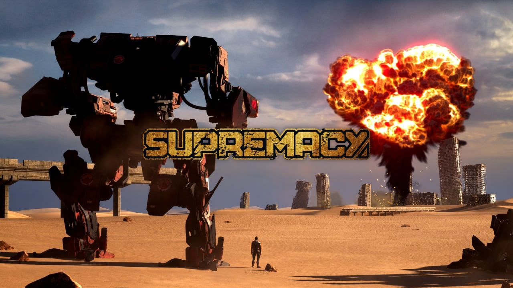

Thomas Tetllaw
Whitegum Valley, WA
0466961697
thomas@tetlaw.id.au
Experience
Bungarra Software - Barton Lynch Pro Surfing
Fremantle, WA
December 2020 - September 2021
- HLSL, C#, Unity, Shader Graph, VFX Graph
- Realistic compute-shader based ocean and wave simulation that is real time and interactive
- Implemented normal map blending technique for character customisation
- Graphics performance optimisation on PS4 and PC
Black Lab Games - Warhammer 40k: Battlesector
Leederville, WA
September 2021 - January 2022
- PS4 certification
- GPU & CPU optimisation on consoles
- Procedural generation
- Unity editor tools

Ninja Software - Supremacy
Rivervale, WA
January 2022 - December 2022
- Unreal Engine blueprints and C++
- Tools programming
- CPU and GPU optimisation
- Graphics programming in Unreal Engine and Unity
- New content creation (Maps, items, characters, abilities)
Education
Academy of Interactive Entertainment
Docklands, VIC
Graduated January 2011
Cert IV in Information Technology (Programming)